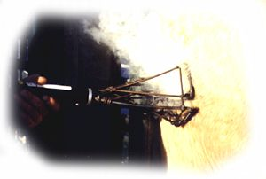

• equipped with three-wire grounded cords
• plug into any 120 volt outlet
• heats in approximately 90 seconds to a constant, even heat — no waiting for the brander to reheat, no fires to build, no propane bottle to refill
• controlled heat feature gives a clearer brand
• round burning surface makes the hair grow away from the brand, not over it
• even heat and quick application eliminates much of the shock and stress from branding
• made from non-corrosive materials
• reinforced at all stress points, making it more durable
|  | The El-Toro Electric Branding Iron is available for cows, calves and horses, and comes in sizes from 2.5 inches to 4 inches high. They are available in single, double or triple character on one heat resistant, sturdy handle. With proper care, they will last for many years. |
• freeze branders
• electric dehorners
• electric cauterizers
• electric twine cutters (removes twines from bale processors)
For more details and products take a look at the El Toro website
Return to Livestock Identification
Nifty Livestock Equipment Ltd.
1999-2005
About Nifty / Feed Equipment / Livestock ID / Handling Equipment / Dealers Page / Contact Us